Assignment
Week workflow
Wekely assignment → introduction to eagle → Edit Schematic/Boad → Mill the board→ solder componets → debug → burn firmware and fuses → test board → edit and publish website
Tools used
- Solder Station
- TaoBao CNC
Software Used
- Eagle
- Fab Modules
- Gimp
Eagle introduction:
After watching the video tutorials above I had a look through the eagle tutorial for the week6. Following it I downloaded and instaled the Fab library for eagle.
Reverse engineering Neil's Board
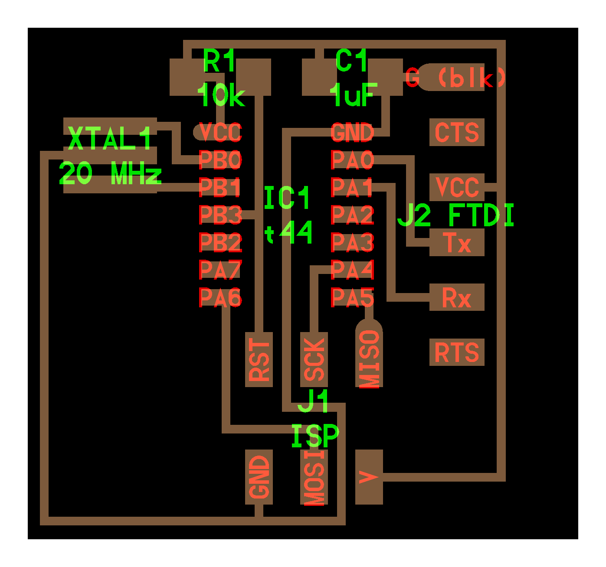
I started by having a look at the Electronics Design - Eagle tutorial With the above schematics in hand I started redrawing it at Eagle
Schematics Step by Step:
- under projects → right click on eagle → click on new project → name project
- right click on project name → new→ Schematic
- type "add" → search for each part
- place part with let click → repeat procedure until all the same part is added → press ESC to add next part → search for next part or press ESC to go back to schematics
- Type "rotate" and left click on part origin to turn part around to desired position
- Type "net" to connect part to each other;
- type "name" and left click on top of part to name part;
- type "label" and left click on wire to connect one to the other without having to net;
- type value and left click on part origin to designate part "value";
- type "move" to position the part as needed
- save the file
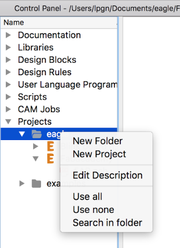
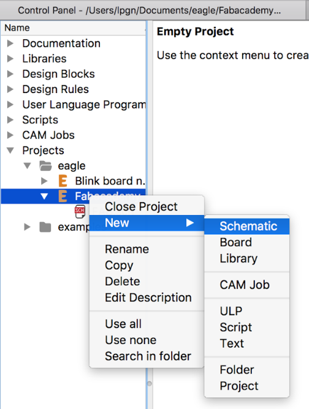
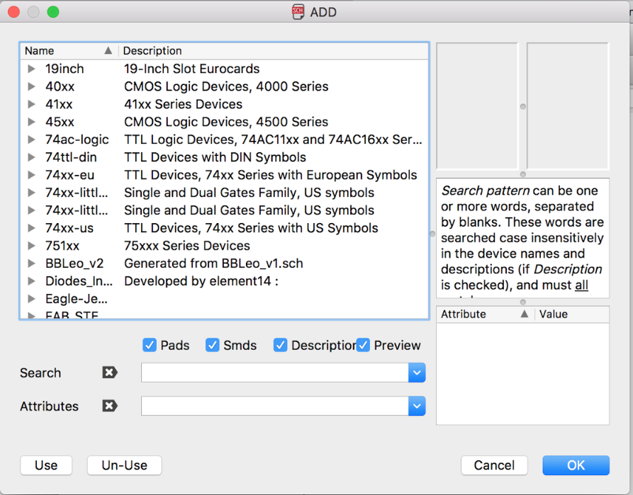

Make BOM (Bill of Materials)
- Left click on design link → left click on Schematic
- wait for program to display part → type new search string in case desired part does not apear → left click manual search → choose desired part → left click select
- repeat previous process until all parts are found
- left click export and save BOM File

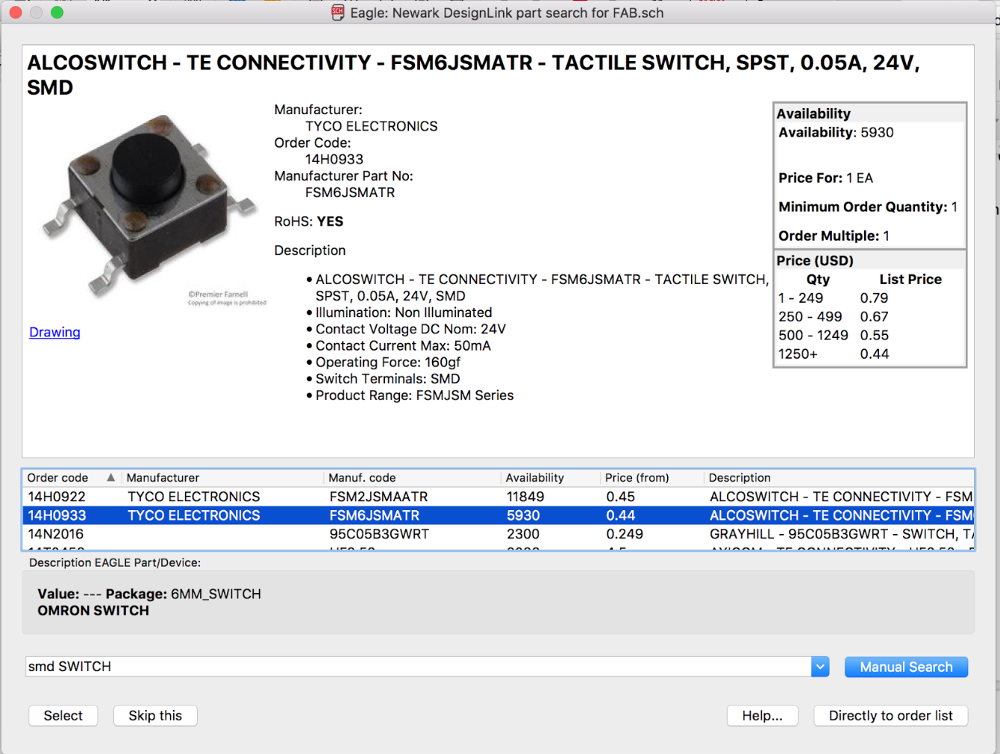
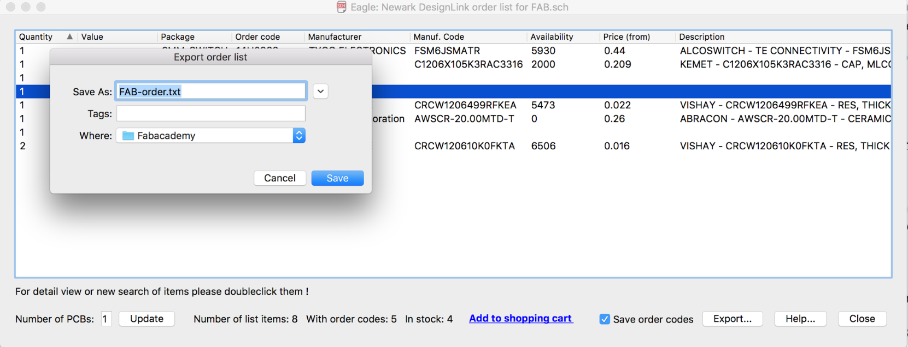
After some edditing here it is:
| Quantity | Value | Package | Manuf. Code |
|---|---|---|---|
| 1 | 6MM_SWITCH | FSM6JSMATR | |
| 1 | 1UF | C1206FAB | C1206X105K3RAC3316 |
| 1 | ATTINY44-SSU | SOIC14 | |
| 1 | 6-pin | FTDI | |
| 2 | 10K | R1206FAB | CRCW120610K0FKTA |
| 1 | 499 Ohms | R1206FAB | CRCW1206499RFKEA |
| 1 | RESONATOR | 20MHz | AWSCR-20.00MTD-T |
| 1 | AVRISPSMD | 2X03SMD | |
| 1 | Green LED |
Drawing the Board
To position the components on the PCB use commands as done on the schematics:
- Left click on file → type "board" → accept warning and left click yes to create start designing the PCB from previously created schematics
- all components will be displayed to the left of the board → Drag them one by one with command "move"+left click drag to position inside the board
- type "rotate" to turn the components the same way as in the schematics
- after all is positioned → resize board size draging the sides of the original board with the command "move"
- type "polygon" and select top layer and traw a square around the board limits in order to creat he top layer of the PCB
- type "ratsnest" → start autorouter type "auto", this command is verry convinient as it gives initial idea on how yowe can route the board, but it doesn't replace manual routing
- select start
- adjust traces if needed with command "ripup" to remove posicioned paths
- place new paths with command "route" and "move" to better position
- type command "info"+left click in order to fine tune position of paths as well as thicknes
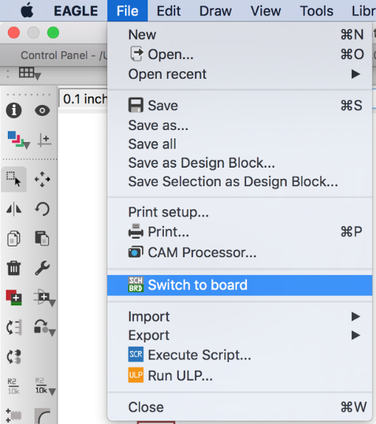
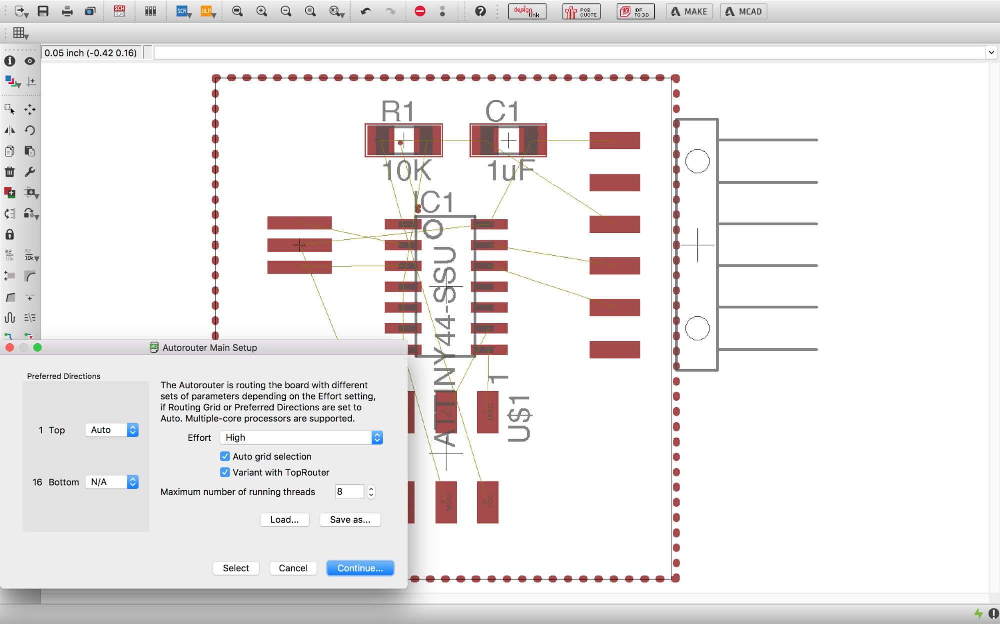
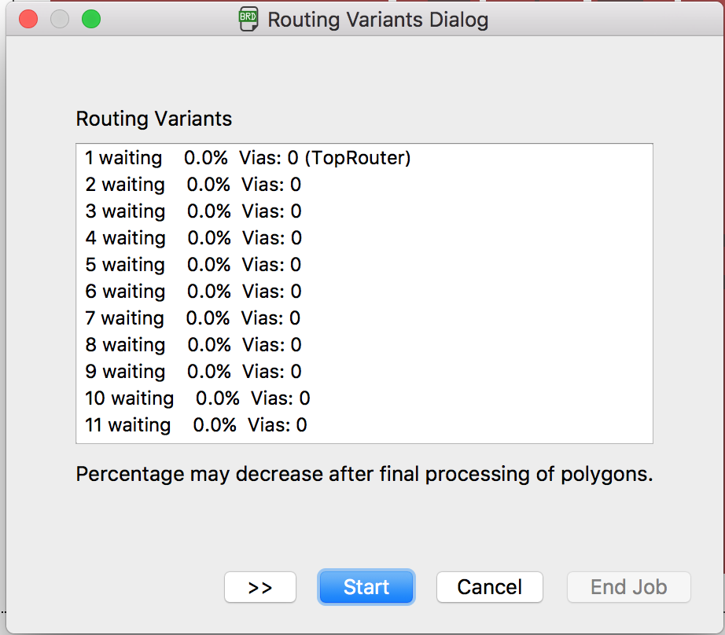
You can wacth how I did it here, pump up the volume for some Cash!
Adding the LED and Button
- In order to add the LED and the Button I went back to the Schematics.
- In the schematics type "add" to add two resistors, one LED and the button
- like before I used the commands move rotate and label name copy to position all components on its place
Exporting the image for fabmodules
- On layers toolbar select only the top layer
- next type "export"→ select image nd monocromatic→and in resolution type 500
- save to desired location
- the result is a black and white image
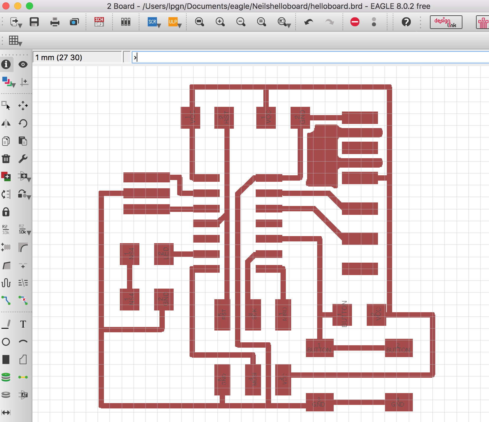
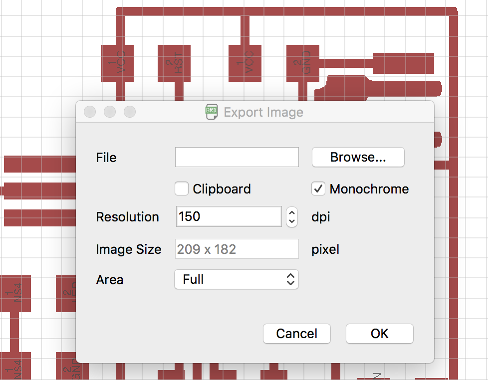
edit in gimp
in the end you should have two images, one for the PCB and one for the outline
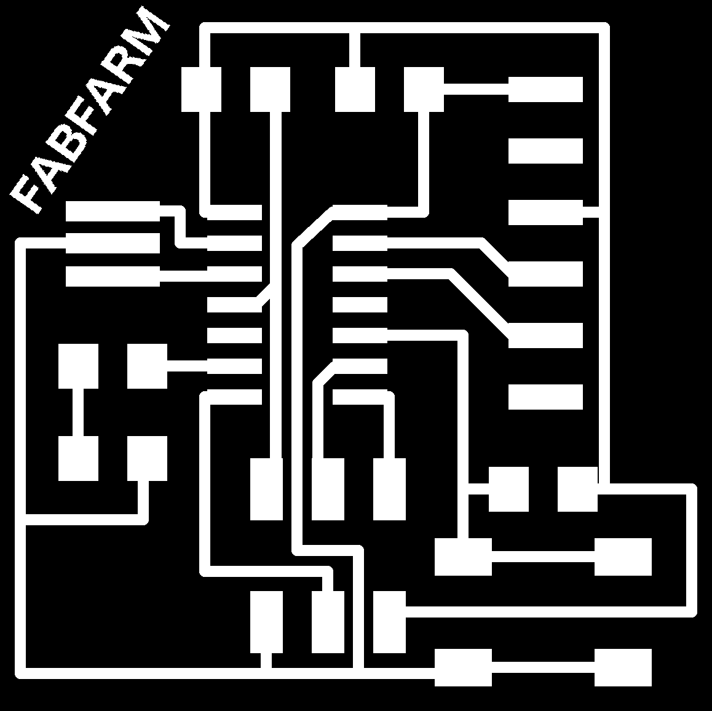
Fab modules and Milling
The process in Fabmodules and Milling is already outlined by the week 4 assignment so I will only keep here some images and video of the results